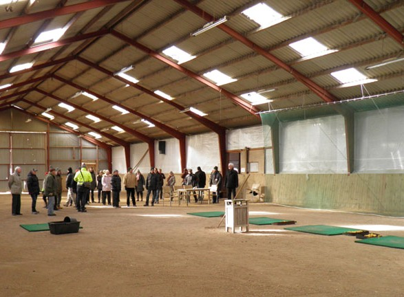
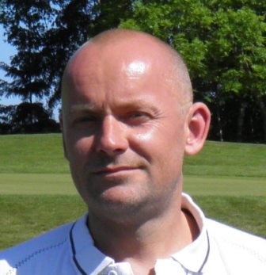

<div class="pages">
  <div data-page="greenkeepers-hjorne" class="page navbar-fixed toolbar-fixed" >
    <div class="navbar">
      <div class="navbar-inner">
        <div class="left">
          <a href="#" class="link back icon-only"><i class="icon icon-back"></i></a>
          <!-- <a href="#" class="back link icon-only"><i class="icon icon-back"></i></a> -->
        </div>
        <div class="center">Greenkeepers hjørne</div>
        <!-- <div class="right"></div> -->
        <div class="right">
        </div>
      </div>
    </div>
    <div class="page-content" style="padding-top:45px;">
       <div class="content-block">
          <p>November 2014 - Information om indendørs træning og vinterbane</p>
          <center></center>
          <p>Indendørs træning i den store hal på Lærkeager vil være muligt i løbet af uge 46. I år vil der blive trukket en streg bag måtterne, denne streg bør I overholde og ikke trække måtterne længere tilbage, idet I så i værste fald slår boldene over nettet og igennem tagpladerne ligesom sidste år. Husk at slukke lyset når I forlader hallen, lyskontakten sidder ved indgangen af hallen.</p>
          <p>Jeg forventer at lukke sommergreens/tees i løbet af uge 48, når vinterbanen er åbnet skal I benytte bærebag og måtter for at beskytte banen mest muligt.</p>
          <p>Områderne omkring greens er specielt sarte da græsset er etableret på et meget tyndt muld lag (ca.2-3cm.) der er strøet ud over en fed lerjord, græsset mistrives i sådanne vækstforhold og er ikke stærkt og modstandsdygtigt i våde perioder. Græsset trædes let i stykker og mister sin tæthed, græsset regenerere ikke sig selv eller sætter nye sideskud i vinter tilstand, og man starter sæsonen med komprimeret områder og et græstæppe med store huller i.</p>
          <p>I skaderne vil alle de uønskede græsser/ukrudt/svampe etablerer sig. Mange af de uønskede græsser er voldsomt tuedannende, og man står med nye tue områder i løbet af sommeren. Det er indiskutabelt at jo mere spil man tillader i vinterperioden desto større skader står man med til foråret, og jo længere tid går der før man har skabt en tilfredsstillende putteoverflade, det er entydige erfaringer man har fra både Danmark og udlandet.</p>
          <p>Det der sker, er at frosten sætter sig på græsplanten, plantecellerne i bladene fryser til, træder man på planten sprækker cellerne og græsplanten skades, mister sin farve og risikerer at gå ud.</p>
          <p>Det næste problem kommer når planten er fri for frost, og det øverste jordlag er tøet op, mens jorden hvori rødderne står, er fast. På dette tidspunkt er greenen meget fugtig og virker løs i overfladen, og man er faktisk i stand til at trække planten midt over ved bare at gå henover greenen, planten dør med det samme.</p>
          <p>Desuden er spil på greens i vinterperioden en kæmpe streesfaktor for græsset, der opstår nemt skader, græsset mister sin tæthed, græsset bliver modtagelig overfor sneskimmel og andre sygdomme.</p>
          <p>VH. Søren.</p>
          <p>Sæsonen 2014 - et tilbageblik!<br />
          Her er et lille tilbageblik på sæsonen 2014. Godt vejr og masser af solskinstimer har medvirket til meget aktivitet på banen hele sæsonen. Det tørre forår medførte en meget tidlig baneåbning, vi åbnede allerede banen i marts.</p>
          <p>Det allerstørste problem med denne sæson har været tørke, altså hvis man tænker græsvækst. Søerne har meget lav vandstand og nogle er uden vand. Gurre å har, stort set, været tør hele sæsonen.</p>
          <center></center>
          <p>Vi har haft mulighed for at vande greens med vores vandingsanlæg, men resten af banen har været gul og afbrændt det meste af sæsonen. Problemet med tørke over så lang tid er, at man ikke har mulighed for at gødske områderne op. Vores bevaringsværdige kulturgræsser er svage og ikke i vækst og det er kun de seje gamle grove græsser(tue græs) der står Banebilleder SЫren 009tilbage og bliver pludselig voldsomt dominerende. I nogle områder er kulturgræsserne aldrig kommet sig igen, og vi stod tilbage med bar jord. Vi såede områderne men med begrænset held, idet vi såede i knastør jord. Problemet med disse områder er, at der nogle steder kun er 2 cm muld, græsplanten har kun 2 cm at sætte sine rødder i og et meget lille område at trække vand/næring fra. Når solen bager ned og det er 30 grader, er fordampningen kæmpe stor på plantens blade. På dette tidspunkt er planten på overarbejde for at trække vand ud af jorden, planten er på nuværende tidspunkt stresset og får den ikke vand, dør planten. Det er derfor at græskvaliteten/græsvæksten varierer
          utrolig meget på banen, græsplanten trives ikke hvis underlaget er dårligt, og i nogle af vores områder er muldlaget ikke eksisterende.</p>
          <p>Vi har i 2014 kørt samme pleje på "den store bane" som de foregående år.</p>
          <p>Den klippede rough og semirough har der været en del snak om i løbet af sæsonen, men jeg kan kun konstaterer at vi aldrig har brugt så mange timer på de 2 maskiner, som vi har brugt i år. Roughklipperen kommer i år til at køre over 500 timer, den plejer at køre omkring 400 timer om året.</p>
          <center></center>
          <p>Vores greens har også stået lidt for skud. Enkelte medlemmer mener at de ikke har været gode i år, men forståeligt nok, mest i de perioder hvor vi har arbejdet med greens. Greenkeeperteamet i HGK har fået til opgave at pleje og vedligeholde græssorten Rødsvingel. Rødsvingel tåler ikke lavt klip og hyppig vertikalskæring, som sætter hastigheden på greens markant op. Som det ser ud nu, vertikalskærer vi hyppigere end vi bør, vi klipper også greens lidt længere ned end vi bør. Dette gør vi kun for at få en acceptabel GlahnHul17a2putteoverflade. Vi klipper vores greens i 4,5mm. Jeg ved, at klubber rundt om os klipper deres greens i 2,5mm, og det får man altså hurtige greens af, men man får i hvert fald ikke mere Rødsvingel af det. I HGK har vi stadig noget Rødsvingel på greens der er værd at bevare. Det har de måske ikke der, hvor de klipper i 2,5mm. Denne græssort har man valgt idet den har mange gode egenskaber: sorten er smalbladet, vinterstærk, modstandsdygtig overfor de fleste sygdomme og kræver minimal vand/gødning. Vækstpunktet på sorten sidder højt og klipper man greens i 2-3mm, klipper man vækstpunktet af og planten dør. Får man klippet sin Rødsvingel væk, vil man stå tilbage med græsser som er meget modtagelige for sygdomme og meget krævende for vand/gødning, og den dag (hvis den kommer), hvor sprøjtemidler bliver faset ud, er man nødt til at etablerer en ny greenoverflade. I HGK er plejestrategien den, at vi vil prøve at bevare/forbedre den Rødsvingelbestand (ca 40 %) vi har i vores greens, derfor prikker/topdresser/eftersår vi en del. Dette efterlader selvfølgelig ikke en perfekt putteoverflade, men det er alt afgørende for sæson 2015. Det er allerede fra 1. september vi begyndte at forberede greens til vinterens strabadser. Hvis greenkeeping bare drejede sig om at stille klipperen i 2,5mm hele sæsonen, og bagefter tromle greens for til slut at nå en greenhastighed på 11-12 fod, så ville hverdagen godt nok være nem. Men det er jo ikke det greenkeeping handler om - man er heldigvis kommet videre og blevet en del klogere!</p>
          <p>Vores årlige greenanalyser så OK ud, nogenlunde samme tal som 2013, vores rod længder holder vi på ca.17cm, fillag det samme, en lille forbedring i Rødsvingel bestand.</p>
          <p>Vi er kommet i en tid hvor svampen har perfekte betingelser for at angribe vores greens. Svamp angriber svage/stressede planter og for 2 uger siden blev vi også ramt af de første små svampeangreb. Angrebene fik vi stoppet med det samme, men heldigvis står der Rødsvingel tilbage i de døde pletter. Jeg var ude at spille en fremmed bane i uge 41, der fik jeg noget af en oplevelse: mindst halvdelen af græsset på greens var fuldstændigt væk og greens lignede et månelandskab. Så kommer man ud at spille på baner, der har svampeskader, bør man vaske sine sko inden man spiller banen i Hornbæk idet svampen kan meget let transporteres under skoene.</p>
          <p>Greenkeeper Teamet<br />
          I 2014 har vi været 7 mand i greenkeeper teamet:<br />
          De "gode gamle" 5 fast ansatte som de foregående år.<br />
          Casper, som i år har været ansat i en periode på 7 måneder (det er 4 sæson han er sæsonmedarbejder), er en god ung mand som vi håber at kunne benytte fremover.<br />
          I år har vi indgået en elevaftale med Oliver, Oliver startede sin læretid 1. januar og slutter med et svendebrev i 2017, Oliver er 19 år, alt tyder på han bliver en dygtig greenkeeper.</p>
          <p>Og husk: ret op, læg tørv på plads, riv bunkeren efter dig, så får vi alle en bedre bane at spille.<br />
          Vi ses derude.<br />
          Søren.<br />
          </p>
          <p>Greenkeeper-nyt 2013<br />
          Fra den 20. november er der vognforbud og folk skal benytte bærebag, der fra vintertee til vintergreen og de små grønne måtter skal benyttes, så ikke man slår græstørv op. Disse regler bør overholdes, så vi alle har en god bane at spille på til foråret.</p>
          <p>Vi er ikke helt færdige med at forberede banen til vinterens strabadser, selv om vi har arbejdet meget med greens/forgreen/teesteder i de sidste 2-3 uger. Vi har dybdeskåret (5 cm) greens/forgreens og teesteder, blæst skæreaffaldet væk fra områderne og dresset rillerne op med 25T rent sand.</p>
          <p>Det gør vi for at få en mere tør turf, reducere/omsætte filten (dødt organisk materiale). Skærerillerne vil få nedbøren til at løbe igennem filten og ned i vækstmediet. Det er rigtig vigtigt, hvis man vil undgå sygdomme i greens, at overfladen er tør.</p>
          <p>Vi mangler at trække propper op på greens og teesteder. Dette gør vi, når der spilles til vinterbane. Greens/tees bliver meget porøse, når de får sådan en omgang og tåler ikke spil herefter. Vi lader hullerne stå åbne hele vinteren. Det gør vi for at reducere filtlaget på greens og skabe luft i vækstmediet.</p>
          <p>Dette giver en rigtig god effekt, når der står nedbør i hullerne, frosten sætter ind og danner sprækker i vækstmediet, jorden bliver løs og der dannes naturlige revner, græsrødderne kan søge. Hullerne vi laver i greens/teesteder er 14 mm i diameter.</p>
          <p>Det er ingen loppetjans at være greenkeeper 3-4 uger inden banelukning. Teamet arbejder hårdt for at forberede greens til næste sæson. Det er uden sammenligning greenkeepernes hårdeste periode; man skal jo huske på, at det arbejde, vi laver nu, er afgørende for det produkt, vi kan vise frem til foråret. Vi føler desværre allerede nu, at vi er lidt bagud, selv om vi har arbejdet meget med banen.</p>
          <p>Dette efterår har været varmt/fugtigt og vi er desværre allerede ramt af svamp flere steder og idet ingen medlemmer ønsker dette spredt mere end højst nødvendigt, bør områderne lukkes for resten af sæsonen. Men jeg er fortrøstningsfuld; vi har heldigvis en del rødsvingel i greens.</p>
          <p>Rødsvingel overlever næsten altid angreb af sneskimmel, andre græssorter dør ud og man står med grimme døde pletter på greens. Men mon ikke det bare bliver som det plejer - at vi igen står med flotte greens til sæsonstart.</p>
          <p>Vandingsanlægget er tømt for vand og springvandet er taget op af søen. Når frosten kommer, tager vi hjertestarteren ind, og midtvejshuset vinterlukkes.</p>
          <p>Og så til det store spørgsmål: Skader det at spille på greens i frostvejr. Svaret er JA, det skader rigtigt meget; i nogle tilfælde så stor skade at græsset dør.</p>
          <p>Det, der sker, er, at frosten sætter sig på græsplanten og plantecellerne i bladene fryser til. Træder man på planten, sprækker cellerne og græsplanten skades, mister sin farve og risikerer at gå ud.</p>
          <p>Det næste problem kommer, når planten er fri for frost og det øverste jordlag er tøet op, mens jorden, hvori rødderne står, er fast. På dette tidspunkt er greenen meget fugtig og virker løs i overfladen og man er faktisk i stand til at trække planten midt over ved bare at gå henover greenen - planten dør med det samme.</p>
          <p>Desuden er spil på greens i vinterperioden en kæmpe streesfaktor for græsset; der opstår nemt skader, græsset mister sin tæthed og bliver utroligt modtagelig overfor sneskimmel og andre sygdomme.</p>
          <p>Områderne omkring greens er specielt sarte, da græsset er etableret på et meget tyndt muld lag (ca. 2-3 cm), der er strøet ud over en fed lerjord.<br />Græsset mistrives i sådanne vækstforhold og her vil græsset være meget modtagelig overfor svamp. Svampesporene vil blive transporteret under spillernes fodtøj til golfbanens følsomme arealer (greens) og man vil stå tilbage med store skader i foråret.</p>
          <p>Græs, som trædes i stykker, regenererer ikke sig selv eller sætter nye sideskud i vintertilstand og man starter sæsonen med komprimerede områder og et græstæppe med store huller i. I hullerne vil alle de uønskede græsser og ukrudt flyve ind og etablere sig. Mange af de uønskede græsser er voldsomt tuedannende og man står med nye tueområder i løbet af sommeren. Det er indiskutabelt, at jo mere spil man tillader i vinterperioden, desto større skader står man med til foråret og jo længere tid går der, før man har skabt en tilfredsstillende putteoverflade. Det er entydige erfaringer, man har fra både Danmark og udlandet.</p>
          <p>Vi er så småt gået i gang med at etablere Lærkeagerbanen (par-3 banen). Så længe vejret/jordbundsforhold tillader det, vil vores arbejdstimer gå med projekt par-3 bane. Man kan følge projektet ved at gå på hjemmesiden, trykke på banen og derefter trykke på ”information om anlægsarbejdet”.</p>
          <p>Jeg vil skrive lidt efterhånden som processen skrider frem. I løbet af vinteren skal greenkeeperteamet også nå at afvikle deres velfortjente afspadsering.</p>
          <p>Venlig hilsen<br />Søren Petersen</p>
          <p>---------------------------------------- </p>
          <p>Sensommeren 2013</p>
          <p>Så er sommeren ved at gå på held, men det har været en god sommer. Med det vejr vi har haft, har der været gode arbejdsbetingelser for greenkeeperne. Der var kun lige en periode i august, hvor vi fik over 80 mm regn på kort tid og der brugte vi det meste af tiden på at rette bunkerkanter op og reetablere gangstier. Da regnen havde forladt os, kom der gang i maskinerne og vi klippede fairways og semirough hver dag i 14 dage.</p>
          <p>Op til klubmesterskaberne havde vi perfekte betingelser for at lave hurtige greens med lav klippehøjde/ vertikalskæringer/ krydsklipninger/greenstromling, lykkedes det os at få greens hurtige og jævne. Dette er ikke en proces, man kan gøre over en længere periode, idet greens bliver meget stressede og mister deres grønne farve. Denne proces modarbejder alt det, vi arbejder på resten af sæsonen - nemlig sundt græs og en fornuftig rodlængde.</p>
          <p>Ellers er sommeren udelukkende gået med pleje og vedligeholdelse af vores golfanlæg. Dette lyder umiddelbart som om, vi har haft god tid - men tro mig vi har haft rigtig travlt. Medlemmer og greenfeespillere har rost banestanden og har stort set alle sammen været meget tilfredse; det er rart og super motiverende for greenkeeperteamet.</p>
          <p>Vores sæsonmedarbejder Casper, som har hjulpet til på banen igen i år, slutter i denne uge. Tak for hjælpen til Casper.</p>
          <p>God sensommer<br />
            Vi ses derude<br />
            Søren Petersen<br /></p>
          <p>---------------------------------------</p>
          <p>Sommeren 2013 (6. juni)</p>
          <p>Hej medlemmer</p>
          <p>Nogle medlemmer syntes vores greens er meget langsommere end andre baner, det er de ganske sikkert også, her vil jeg prøve at beskrive hvorfor.</p>
          <p>Greenkeeperteamet har til opgave at pleje og vedligeholde rødsvingelgreens. Da vækstpunktet sidder højt på Rødsvingel, tåler det ikke klip i længere perioder under 5mm. I Hornbæk har man valgt rødsvingel, fordi det kræver meget lidt vand og gødning og så er det den sort, der klarer sig bedst over vinteren. Det græs, der bliver angrebet af sneskimmel, har stor chance for at spire igen om foråret. I øvrigt er rødsvingel en meget finbladet sort, så man kan få lynhurtige greens i renbestand.</p>
          <p>Hvis man vil være på forkant med miljøet - og det vil vi gerne i Hornbæk - er rødsvingel den rigtige sort.I Hornbæk har vi desværre ikke renbestand. Greens er sået til med 80 % rødsvingel og 20 % hvene. Hvene er en græs, der er bredere i bladet (tåler lavt klip) og den har man valgt at så ind, da den er hurtigere til at reetablere de skader, man får i greens (nedslagsmærker eller andre skader).</p>
          <p>Udover det kæmper vi meget med en uønsket græssort, som hedder en-årig rapgræs (tåler lavt klip). Denne græs etablerer sig lynhurtigt i nedslagsmærker og andre skader på greens. Denne græs er også bredbladet og sætter frøstand omkring 1 juni. I har sikkert bemærket de små hvide frøstande, der er på greens/forgreens/teesteder/fairways, denne sort gør greens langsomme, når vi klipper greens i 5 mm.</p>
          <p>Rigtig mange baner har hveneblandinger og masser af en-årig rapgræs. Dette er en perfekt blanding med hensyn til hurtige greens, græsset tåler klip ned til 3mm og så får man hurtige greens. Disse greens kræver masser af gødning og vand. Nede under putteoverfladen findes intet liv, ingen græsrødder til at optage vand (tørkeskader) og næring og holde fast på turfen. Jeg har tit kontakt med greenkeepere, der ikke tør køre en prikker over deres greens, de er bange for at hive tørven af. I fremtiden, med den nye miljølov, vil det være disse greens, der står med kæmpe problemer:  sneskimmel angriber med det samme svagt græs som en-årig rapgræs.</p>
          <p>Det er tydeligt på vores greens, at vinterskaderne kommer hovedsagligt i en-årig rapgræs. Man kan ikke vertikalskære denne rapgræs væk, idet en vertikalskærer laver et perfekt såbed til de frøstande. der sidder under folks sko. Man skal så vidt det er muligt, prøve at holde græstæppet tæt i den periode, hvor rapgræssen blomstrer allermest.</p>
          <p>Det eneste forsvar, vi har i fremtiden, er at skabe perfekte betingelser for Rødsvingel, dvs. lys og luft omkring greens, luft i vores vækstmedie(prikke),så vidt det er muligt holde greens tørre, helst ikke klippe under 5mm.</p>
          <p>I Hornbæk har vi flere forskellige græssorter at arbejde med, sorterne vokser ikke med samme hastighed, derfor vil man kunne se hen under eftermiddagen små områder der vokser mere end andre områder, dette vil naturligvis give et uroligt rul. Hastigheden på puttet vil også være anderledes om eftermiddagen. I Tirsdags klippede vi greens kl.6 i 5mm og kørte flydende gødning på, med den varme vi har nu vil jeg gætte på at man hen under aftenen puttede på greens i 7mm, og så skal man jo slå lidt hårdere til bolden. I år har vi prikket/ vertikalskåret/ topdresset/eftersået(lagt rødsvingel ned i skæreriller) og det er da klart at det gør overfladen ujævn.</p>
          <p>Udviklingen på vores greens går fremad, på nogle greens har vi forbedret rodlængden med 25% siden 2009, enkelte greens er der målt rodlængde på over 20cm. Lange rødder=sundt græs.</p>
          <p>Dette er ingen klagesang men blot en konstatering, hvis ikke vi passer på den Rødsvingel vi har, så mister vi den. Hurtige greens er ingen kunst at lave, det drejer sig om 10 minutter på værkstedet, men det har jo intet med bæredygtig greenkeeping at gøre, hvis man altså ønsker rødsvingel og står i vores situation.</p>
          <p>I øvrigt har vi flere gange bevist, at vi kan lave hurtige greens, men det har en konsekvens, hvis man ønsker dominans af Rødsvingel.</p>
          <p>Vi ses derude.<br />
          Søren.</p>
          <p>----------------------------------------------------------------- </p>
          <p>Foråret 2013 (17. april)</p>
          <p>Så er foråret kommet og banen er åben for spil til sommergreens. Banen har klaret sig overraskende godt over den lange vinter, som har bestået af snefald… optøning… snefald… optøning; det er det værste man kan udsætte greens for. Men på trods af det, står vi tilbage med greens, der har meget få vinterskader takket være vores pleje på greens efteråret 2012 og så selvfølgelig lukning af greens på det helt rigtige tidspunkt.</p>
          <p>Fairways har haft det hårdt i løbet af vinteren, fuglene har holdt ”fest” og hygget sig på store dele af fairways på hul 3-5-11-12-15, de hiver simpelthen tørven af fairways med næbbet i håb om at finde føde, det virker lidt voldsomt at se på. På nuværende tidspunkt har vi vertikalskåret områderne. Nu venter vi bare på, at græsset går i vækst, så vi kan bringe lidt gødning ud/de dybe huller bliver fyldt op og får lidt græsfrø, så bliver fairways fine igen.</p>
          <p>Jeg vil her skrive lidt om, hvad vinteren er gået med udover afspadsering/restferie/uddannelse. Klubhusområdet har fået en stor tur denne vinter. Gamle træer er fjernet, rødder og stød gravet op af jorden, nyt jord er kørt til området, over 800 bøgeplanter sat i jorden, 9 træer er sat i jorden(8 Røn + 1 småbladet lind), nye stier er etableret og de gamle stier renoveret.</p>
          <p>Ny boldkasse, bøgehæk klippet ned ved terrasse, så man fra terrassen kan se starten af 1'ste hul. P-pladsen har fået nye ærtesten og den lille hvide kæde, der sad mellem de store stolper på P-pladsen, er erstattet med et tykt reb. Der er blevet tyndet ud i ”krattet” til højre for green nr. 2. Det store flotte egetræ, man kan se på billedet nedenfor, var omkranset af træer og derfor voldsomt begrænset i udvikling.</p>
          <p>Der er også blevet tyndet ud i hegnet mellem 7 rød tee og 8 green. Dette er for at give de egetræer, der står i hegnet mulighed for at udvikle sig.</p>
          <p>Søren</p>
          <p>PS: Se hele indlægget inklusive fotos <a href="">HER</a></p>
          <p>---------------------------------------------</p>
          <p>November 2012</p>
          <p>Sommerbanen lukker & vinterbanen åbner.</p>
          <p>Sommergreens/greenområder/teesteder holdes lukket fra 19. november og frem til foråret; det har vi valgt at gøre, da vi ikke har greens og greenområder, der tåler vinterspil.  Desuden åbner vi greens/forgreens/teesteder med hugpiber på 16 mm i diameter i en varieret dybde og lader dem stå åbne hele vinteren, det gør områderne meget sårbare at betræde. Områderne omkring greens er specielt sarte, da græsset er etableret på et meget tyndt muld lag (ca.2-3 cm) der er strøet ud over en fed lerjord.</p>
          <p>Græsset mistrives i sådanne vækstforhold og er ikke stærkt og modstandsdygtigt i våde perioder. Græsset trædes let i stykker og mister sin tæthed. Græsset regenererer ikke sig selv eller sætter nye sideskud i vinter tilstand, og man starter sæsonen med komprimeret områder og et græstæppe med store huller i. I skaderne vil alle de uønskede græsser/ukrudt/svampe etablere sig. Mange af de uønskede græsser er voldsomt tue dannende, og man står med nye tue områder i løbet af sommeren.</p>
          <p>Det er indiskutabelt at jo mere spil, man tillader i vinterperioden, desto større skader står man med til foråret, og jo længere tid går der, før man har skabt en tilfredsstillende putteoverflade - det er entydige erfaringer man har fra både Danmark og udlandet. </p>
          <p>Fra den 19. november er der vognforbud og folk skal benytte bærebag.</p>
          <p>Fra den 19. november spilles der fra vintertee til vintergreen og de små grønne måtter skal benyttes, så ikke man slår græstørv op. Disse regler bør overholdes, så vi alle har en god bane at spille på til foråret.  Lad os håbe at plejen på greens i løbet af sæsonen og lukning af greens på det rigtige tidspunkt gør, at vi igen står med flotte greens til sæsonstart. Desuden er vi allerede i dette lune/fugtige efterår ramt af begyndende svamp på greens/teesteder/forgreens og da ingen medlemmer ønsker dette spredt mere end højst nødvendigt, bør områderne lukkes for resten af sæsonen.</p>
          <p>I løbet af vinteren har vi udover at passe banen nogle projekter vi skal have gennemført, hvis vejret tillader det.Fairwaybunkeren på hul 1 skal deles til 2 bunkers og området skal planes mere ud. Det skal gøres, så vi kan klippe hele området i semirough Dette er ikke muligt, som det er nu.På terrassen klippes den eksisterende bøgehæk lav, træerne mellem tee 1 og terrassen fældes, hybenbuskene fjernes, ny græsplæne bliver etableret, og der sættes en ny bøgehæk bag teestedet. Dette gøres for at få udsyn til hul 1 fra terrassen.</p>
          <p>Rækken med træer mellem drivingrange og puttinggreen fældes. Træerne har det ikke godt, og puttinggreen har behov for lys. I stedet for træerne bliver der sat en bøgehæk med 2 indgange til puttinggreen , boldkassen bliver fornyet og flyttet længere væk fra 1ste teested.Vi skal også etablere en køre sti fra grus p-pladsen ned langs Bøtterupvej til Lærkeager.Stien bliver bygget med en bund af stabilgrus, på toppen bliver der lagt et tyndt lag slotsgrus.</p>
          <p>Sæsonen er forløbet fint med hensyn til pleje af banen, vi har brugt en hel del tid på klipninger.</p>
          <p>Her får I et lille overblik over, hvor mange timer vi bruger på nogle af vores maskiner.<br />
            Greens  610 timer<br />
            Forgreens&testeder  360 timer<br />
            Fairway  700 timer<br />
            Semirough  513 timer<br />
            Rough  438 timer<br />
            Bunker rivning  500 timer</p>
          <p>Vinteren bruges også til at få afholdt rest ferie/afspadsering og uddanne medarbejdere.</p>
          <p>God vinter<br />
            Baneudvalget/Greenkeeperne</p>
          <p>----------------------------------------------------</p>
          <p>Greenkeeper info Maj 2012</p>
          <p>Så blev sæsonen skudt i gang i Hornbæk, banen har klaret vinteren bedre end nogensinde før. Vores tilstandsrapport på greens dokumenterer, at vores greens er på rette vej, rodlængden er en smule forbedret, filtlaget er gået en smule tilbage, ophobning af filt er kraftig, når man har sådan en våd sommer, som vi havde i 2011.</p>
          <p>Nu kan vi begynde at bruge tilstandsrapporterne som et vigtigt stykke værktøj, når man har lavet det over 3 år, sikrer man, at man har fingeren på pulsen med hensyn til udviklingen af vores greens. Når man som os opdager en negativ udvikling af filtdannelse, har man mulighed for at få det under kontrol igen med lidt flere luftninger af greens.</p>
          <p>Der har heldigvis ikke været udskiftning af greenkeeperteamet i nogle år; det er et team, der arbejder rigtig godt sammen. Christian er snart uddannet. I øjeblikket er han til svendeprøve. Christian er tilbage i Hornbæk d.11 Juni som uddannet greenkeeper.</p>
          <p>Vores sommerhjælp i år hedder Casper Søgård, han hjalp os sidste sommer. Han er en ung fyr, som ikke er bange for at gå til den. Emil vil man også se engang imellem på en fairwayklipper. Emil dukker kun op, når det brænder lidt på henover sommeren.</p>
          <p>Der har også været fart på i den ferske eng - 17 får fik 15 lam henover påsken.<br />
          Årets første baneanmeldelse var heldigvis også rigtig positiv.</p>
          <p>Vi ses på banen<br />
          Søren Petersen</p>
          <p>------------------------------------------------</p>
          <p>Baneåbning 2012</p>
          <p>I Hornbæk golfklub har man i bestyrelsen og baneudvalget besluttet, at man vil have en forbedring af greens og greens områder. Der blev udarbejdet en tidskrævende plejestrategi, og der bliver lavet en tilstandsrapport på samtlige greens hvert forår.</p>
          <p>Alt det gør vi for at forbedre og følge udviklingen, og det går fremad.Greens tillader ikke at blive spillet på om vinteren, eller når væksten stadig står stille, og det gør den i Hornbæk. Det er så småt begyndt at hjælpe på greens med lidt varme/sollys, men de er ikke klar endnu.</p>
          <p>Græsset har ingen mulighed for at regenererer sig selv, når væksten er svag.Der er utrolig meget snak og skriveri om hvilken klubber der har åbnet greens og hvem der ikke har, det er ikke vigtigt, det som er vigtigt er at plejestrategien bliver fulgt og der er fremgang i tilstandsrapporten for greens, så kan det godt være vi åbner lidt senere end de andre klubber. Men vi er ikke i tvivl om at vi er på rette spor.</p>
          <p>Det er baneudvalget i samarbejde med greenkeeperne der sætter åbningsdatoen.Vi satser på at åbne sommerbanen d.31 marts(hvis vejret tillader), indtil da skal der selvfølgelig bruges måtter og bærebag.I øvrigt er der lagt mange dræn på banen, områderne er reetableret, vis hensyn og gå udenom, så kommer der hurtigere gang i spiringen.</p>
          <p>På forhånd tak.<br />
            Go` sæsonstart.<br />
            MVH. Søren.</p>
          <p>-----------------------------------------------------</p>
          <p>Vinterarbejde 2012</p>
          <p>Så er det blevet vinter, og i greenkeeperteamet har vi rigtigt travlt. Udover de almindelige vinterforanstaltninger er vi gået i gang med store drænprojekter. Vi har indtil videre drænet indspil området, et stort areal på hul 1, og er på nuværende tidspunkt i gang på hul 2,3,4,9,15.</p>
          <p>Drænarbejdet på banen vil være et projekt, der skal foregå flere år frem. Nogle af opgaverne er etablering af nye dræn, andre drænopgaver er reetablering af gamle dræn. Det drænarbejde, der er lavet ved anlæggelsen, er ufatteligt dårligt lavet. Man fatter ikke, at folk har samvittighed til at lave sådan et stykke arbejde.</p>
          <p>Et godt eksempel er bunkeren på hul. 4, som i regnperioder fungerer som badekar. Greendræn fra 3. og 4. green fører ned i bunkeren og ifølge dræntegninger skulle bunkeren været drænet af til faskine kort af åen. Det var den ikke - der var stukket et kort drænrør ind i bunkerkanter, hvor den fjerneste ende af røret lå 25-30 cm højere end bunden af bunkeren, så der var ikke meget dræn effekt.</p>
          <p>Nu har vi etableret et dræn med det rigtige fald til en faskine kort af søen, så er der da en dræntegning, der passer.I øvrigt har vi drænet kørevejen igennem skoven, så burde juniorer og dem, der har lyst til at spille 9 huller, kunne gå igennem skoven uden at få våde fødder.Beskæring og fældning af nøje udvalgte træer vil foregå omkring 6. herre tee, 10. herre og dame tee, til højre for 12. green ned mod den lille sø, bag 18. green.</p>
          <p>De døde træer omkring i rough områderne vil blive fjernet.Der vil også blive tyndet ud i diverse krat.Poplerne ud mod Bøtterupvejen er fjernet, i stedet er der sat 60 meter bøgehæk og i hækken er der sat 6 træer (Sølvrøn).Inden sæsonstart vil indspil bunkeren blive gravet større, etableret dræn og udskiftet sandet.Michael går på det varme værksted og sørger for, at maskinerne er tip top til sæsonstart, vi indleder sæsonen med en ny Toro fairwayklipper.</p>
          <p>I øvrigt så greens/forgreens/teesteder rigtig godt ud, inden sneen faldt, så lad os håbe, at områderne også er fine, når sneen forsvinder.</p>
          <p>Venlig hilsen<br />
          Søren Petersen</p>
          <p>-------------------------------------------------</p>
          <p>Oktober/november 2011</p>
          <p>Sommergreens/greenområder/teesteder holdes lukket fra 14. november og frem til foråret. Det har vi valgt at gøre, da vi ikke har greens og greenområder, der tåler vinterspil. Desuden åbner vi greens/forgreens/teesteder med hugpiber på 16mm i diameter i en varieret dybde og lader dem stå åbne hele vinteren; det gør områderne meget sårbare at betræde.</p>
          <p>Områderne omkring greens er specielt sarte, da græsset er etableret på et meget tyndt muld lag (ca.2-3cm.) der er strøet ud over en fed lerjord, græsset mistrives i sådanne vækstforhold og er ikke stærkt og modstandsdygtigt i våde perioder. Græsset trædes let i stykker og mister sin tæthed, græsset regenererer ikke sig selv eller sætter nye sideskud i vinter tilstand, og man starter sæsonen med komprimeret områder og et græstæppe med store huller i.</p>
          <p>I hullerne vil alle de uønskede græsser og ukrudt flyve ind og etablere sig. Mange af de uønskede græsser er voldsomt tuedannende, og man står med nye tue områder i løbet af sommeren. Det er indiskutabelt, at jo mere spil man tillader i vinterperioden, desto større skader står man med til foråret og jo længere tid går der, før man har skabt en tilfredsstillende putteoverflade; det er entydige erfaringer, man har fra både Danmark og udlandet.</p>
          <p>Fra den 14. november er der vognforbud og folk skal benytte bærebag.Fra den 14. november spilles der fra vintertee til vintergreen og de små grønne måtter skal benyttes, så ikke man slår græstørv op. Disse regler bør overholdes, så vi alle har en god bane at spille på til foråret. Lad os håbe at plejen på greens i løbet af sæsonen og lukning af greens på det rigtige tidspunkt gør, at vi igen står med de flotteste greens til sæsonstart.</p>
          <p>Desuden er vi allerede i dette lune/fugtige efterår ramt af begyndende svamp på greens/teesteder/forgreens, og da ingen medlemmer ønsker dette spredt mere end højst nødvendigt, bør områderne lukkes for resten af sæsonen.</p>
          <p>På forhånd tak.<br />
          Venlig hilsen<br />
          Greenkeeperne/Baneudvalget</p>
          <p>-------------------------------------------------------</p>
          <p>September 2011</p>
          <p>Klubmesterskaberne er vel overstået, det gode vejr og hurtige greens blev der talt meget om. Der var flere, der mente, det var lidt unfair at skulle putte på så hurtige greens, når man kun havde få dage at øve sig på de hurtige greens.</p>
          <p>Der blev spurgt, om man kunne klippe greens ned (lav klippehøjde) en måneds tid inden mesterskaberne. Det kan man sagtens gøre, men ikke når man har valgt at arbejde med græssorten rødsvingel på greens. Det har klubben valgt, fordi det er det græs, der egner sig bedst til det danske klima; den er modstandsdygtig overfor vinterskader og den kræver minimal vand og gødning. Vækstpunktet på rødsvingel sidder ca. 5 mm over jordoverfladen. Klipper man det af eller beskadiger man det, kan græsplanten gå ud.</p>
          <p>Op til mesterskaberne og under mesterskaberne klippede vi under 5 mm - søndag eftermiddag kunne man godt se på greens, at de var en smule stressede, men bevares de rullede godt. Som greenkeeper var det rart at se, at efter 2 dage uden klip på greens, ser de allerede friskere ud. Greenklipperen er sat op i højde igen og vi skal i gang med eftersåning/topdresse/lufte greens. I efteråret skal vi efterså greens med 250 kg ren rødsvingel.</p>
          <p>Vi håber med god forberedelse i efteråret at komme igennem vinteren uden alt for store skader.I øvrigt er det blevet meget moderne med speedweek og andre tiltag med superhurtige greens, men de har ikke rødsvingelgreens eller også har de det i hvert fald ikke længe. Jeg vil godt slå fast, at hurtige greens er ikke svært at lave, men gør man det over en længere periode, kan det have katastrofale følger, hvis man ønsker at bevare rødsvingelbestanden.Jeg håber, det gav lidt forståelse for, at greens ikke er superhurtige altid.</p>
          <p>Mvh. Søren</p>
          <p>------------------------------------------</p>
          <p>August 2011</p>
          <p>Der er et par medlemmer, der har været enige om, at puttekvaliteten ikke har været optimal; det har den nok heller ikke været, men der er mange faktorer, der spiller ind.</p>
          <p>Vi opdagede, at flere af vores greens var plaget af anaerobe forhold (iltmangel i vækstmediet). Meget nedbør, dårligt vækstmedie og komprimering er nogle af de faktorer, der giver anaerobe forhold - i værste fald medfører det, at græsplanterne dør.</p>
          <p>Derfor valgte vi at topdresse og prikke greens 2 gange inden for 14 dage. Det, er der nok nogle, der mener, ikke er særligt smart i sommerferien, men vi havde ikke noget valg, greens skulle have luft og det skulle gå stærkt.</p>
          <p>Udover det kom der ualmindeligt meget vand ned fra oven, der var faktisk dage, hvor det ikke var muligt at klippe græs. Med de forudsætninger er det ikke muligt at lave perfekte og lynhurtige greens. Men greens er allerede nu i bedring og jeg er ikke i tvivl, at de bliver rigtigt gode til klubmesterskaberne.</p>
          <p>----------------------------------------------</p>
        </div>
    </div>
    </div>
    </div>
  </div>
</div>
